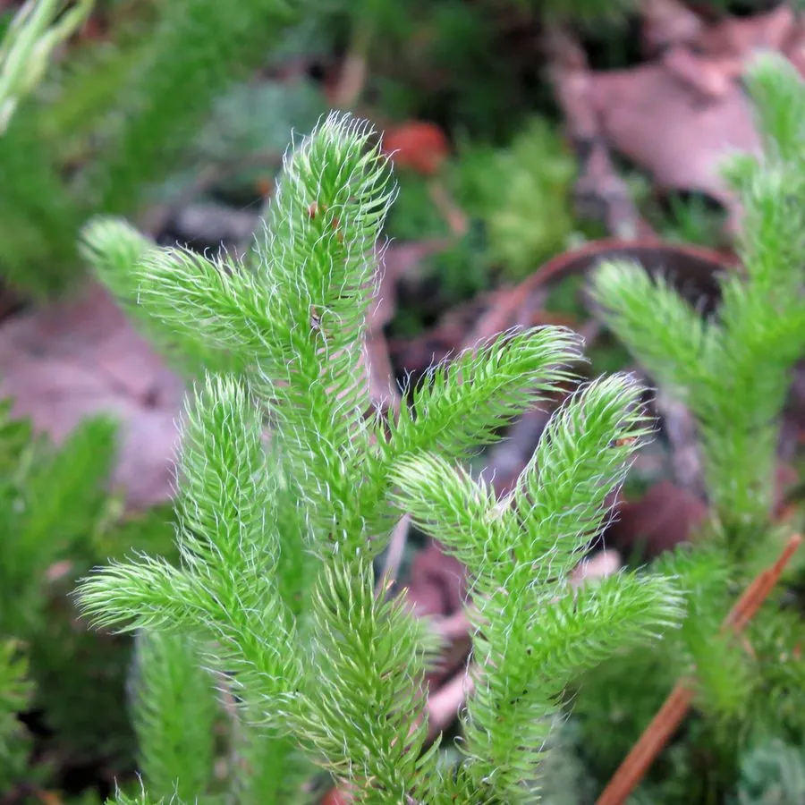

蕨类与裸子植物 · 植物界
石松 Lycopodium clavatum

石松的匍匐茎蔓延成片、枝叶密如松针，孢子粉曾被称为“石松粉”，是传统的药用与工业原料植物。
- 分类
- 门蕨类植物门纲石松纲目石松目科石松科属石松属
- 栖息环境
- 海拔 500–2000 m 的山地林下、灌丛与阴湿岩石旁
- 地理分布
- 中国东北、华北、华东、西南及北半球温带山区
- 保护级别
- 暂无评估；因过度采收，野生资源呈下降趋势
物种志
石松是石松科的多年生蕨类，主茎匍匐地面，长可达数米，向上生出直立的侧枝，高 10–30 cm。叶细小，线状披针形，密生于茎上，先端有白色长毛，远看像一小片松针。直立枝顶端生有圆柱形孢子囊穗，常 2–3 个并列，成熟时释放大量淡黄色孢子粉。石松的孢子粉质轻、含油、易燃，是它最著名的产物。
石松喜温暖湿润、半阴的环境，常生于海拔较高的山坡林下、灌丛与岩石旁，靠匍匐茎不断扩展形成片状群落。它以孢子繁殖，生长缓慢，自然更新不易。孢子粉在工业上曾用于铸造脱模、焰火和闪光粉，全草入药称“伸筋草”，有祛风除湿、舒筋活络之效。由于孢子粉需求量大，野生石松曾被大量采收，资源下降，需要合理保护并开展人工栽培研究。
形态与习性
- 匍匐茎长可达数米，不断扩展成片
- 直立枝高 10–30 cm
- 叶线状披针形，密如松针
- 孢子囊穗圆柱形，常 2–3 个并列
- 孢子粉淡黄色，质轻易燃
- 药用全草入药称“伸筋草”
- 生长缓慢，自然更新困难
趣味知识
- 石松孢子粉在显微镜下是均匀的四面体颗粒，曾被用于研究流体力学。
- 它质轻易燃，早期被用作舞台火焰和闪光粉的原料。
- 石松的匍匐茎可长达数米，一株就能铺满一片林下地面。